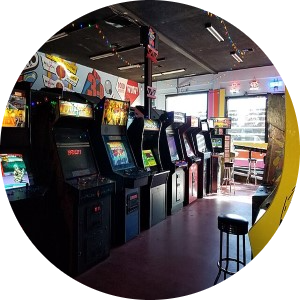
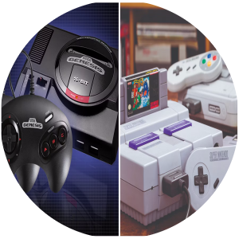
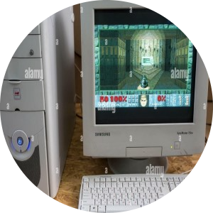
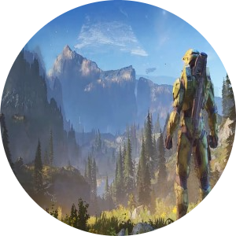

| Faza experimentală (anii 1950): Conceptul de joc video se naște, programatorii făcând jocuri simple pe calculatoare masive. Acestea erau experimentale și nu erau accesibile publicului. |
| Nașterea jocurilor Arcade (anii 1970): Se observă o schimbare masivă cu venirea jocurilor de tip Arcade. Titluri precum Pong și Space Invaders au capturat imaginația prin graficile simple și conținut interesant. Această eră a introdus, de asemenea, și console precum Atari 2600, care au adus jocurile în camerele noastre. |  |
|  | Războaiele consolelor și francize iconice (anii 1980): Se remarcă războaiele consolelor dintre Nintendo (NES) și Sega (Master System). Această eră a produs francize de jocuri legendare, precum Super Mario Bros., The Legend of Zelda, și Sonic the Hedgehog. Jocurile devin mai complexe cu grafici și sunete îmbunătățite. |
| Dezvoltarea PC-urilor și a dispozitivelor portabile (anii 1990): Calculatoarele personale (PC) devin din ce în ce mai populare ca o platformă de jocuri. Titluri precum Doom și Command & Conquer au împins limitele graficilor și complexitatea poveștii transmise. Console portabile, precum Game Boy, cresc popularitatea jocurilor precum Tetris și Pokemon, atingând o popularitate imensă. Graficile 3D încep să fie dezvoltate, revoluționând modul în care jocurile sunt percepute. |  |
|  | Jocuri online și lumi virtuale (aniii 2000): Jocurile online încep să prindă amploare cu titluri precum World of Warcraft, permițând jucătorilor să se conecteze și să colaboreze în timp real cu oameni din toate colțurile lumii. Consolele devin și ele populare, remarcându-se consola PlayStation 2, care ajunge să fie una dintre cele mai bine vândute console din lume, precum și Xbox. |
| Explozia jocurilor pe telefon și VR (anii 2010 - prezent): Telefoanele și tabletele devin capabile de a rula jocuri, permițându-le programatorilor să creeze titluri precum Angry Birds, Candy Crush Saga și Flappy Bird, care ajung senzații și captează atenția tuturor. Realitatea virtuală devine și ea o realitate, oferind o nouă dimensiune a imersiei jocurilor. |
| ©2024 -Nume șters- |